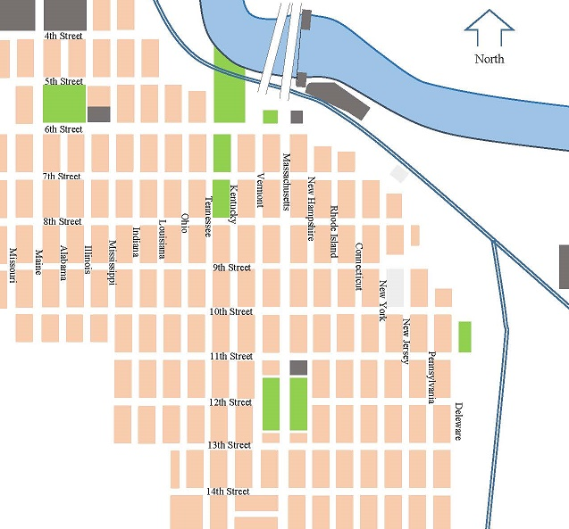

The street map above contains six regions surrounded by hidden boundary lines: Dam and Hydroelectric, Downtown Lawrence, East Lawrence Residential, East Lawrence Industrial, Old West Lawrence, and University of Kansas.
Moving the cursor from outside to inside one of those regions generates a pop-up box that identifies the region just entered. Clicking within any region displays a representative image in the frame above.
Downtown Lawrence comprises about 20 city blocks between South Park and the Kansas River.
East of downtown is an 80-block area called East Lawrence. The western half is residential while the eastern half is industrial.
West of downtown is an 80-block area called Old West Lawrence with residential and medical facilities.